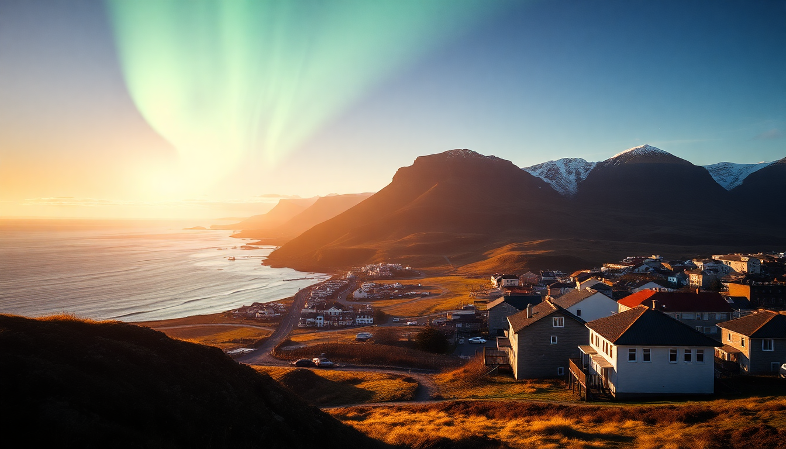

Best Time to Visit Iceland's Northern Lights: Seasonal Guide

I spent three winters chasing the aurora across Iceland, and I learned that seeing the Northern Lights is less about luck and more about planning around daylight, cloud cover, and a realistic budget. This guide breaks down exactly when to go, where to base yourself in Reykjavik, Akureyri, and Vik, and what to expect from the weather and crowds each season.
When is the best season to see the Northern Lights in Iceland?
The short answer is September through March, but the "best" season depends on your tolerance for cold and darkness. September and October offer milder temperatures (around 0–5°C) and still have enough daylight for sightseeing, but the nights are long enough by 9 PM for aurora hunting. November through February gives you the darkest skies—up to 18 hours of darkness in December—but also the worst weather: frequent storms, closed roads, and wind that makes standing outside miserable.
I found late September to be the sweet spot. The Ring Road was still open, we could explore Vik without ice on the cliffs, and the aurora appeared three out of seven nights. If you want guaranteed darkness and don't mind layering up, February is a solid month—less rain than October, and the snow-covered landscapes reflect the lights beautifully.
Should I stay in Reykjavik, Akureyri, or Vik for the Northern Lights?
Your base matters more than the date, because light pollution and cloud cover vary wildly across Iceland.
- Reykjavik is the most convenient but worst for aurora viewing. We stayed at Hotel Borg near the harbor, and while it was comfortable, we had to drive 20 minutes out to Grótta Island Lighthouse or join a tour to escape city lights. The city's microclimate also traps clouds.
- Akureyri in the north is my favorite. The Icelandair Hotel Akureyri sits right by the fjord, and we saw the aurora from the hotel's backyard on two clear nights. The Laufás area nearby offers dark fields with zero light pollution.
- Vik is a gamble. The black sand beach at Reynisfjara is a stunning foreground for photos, but the coastal weather is notoriously fickle. We stayed at Hotel Kría, which has a rooftop viewing deck, but we only got one clear night out of four. Skip Vik if you're on a tight schedule.
What tours are worth booking for aurora hunting?
I'm not a fan of big bus tours that herd 50 people to a single spot. Instead, I recommend small-group operators that chase clear skies.
- Arctic Adventures (based in Reykjavik) runs 4x4 tours that go deep into Þingvellir National Park—far from the city lights. We saw the aurora over the rift valley, and the guide brought hot chocolate.
- In Akureyri, SBA-Nordurleið offers a "Northern Lights by Boat" tour from the harbor. It sounds gimmicky, but the lack of land-based light pollution on Eyjafjörður makes the lights look brighter. We saw green curtains reflecting off the water.
- Skip the "Super Jeep" tours in Vik unless the forecast shows high activity. The roads around Mýrdalsjökull glacier are rough, and you'll pay extra for a bumpy ride to a cloudy sky.
How do I check the aurora forecast and cloud cover?
You can't rely on the hotel front desk or a tour operator's optimism. I used two tools every night.
- Vedur.is (Icelandic Met Office) has a cloud cover map that updates hourly. We'd check it at dinner and decide which direction to drive.
- Aurora Forecast (app or website) gives a Kp-index rating from 0 to 9. A Kp of 3 is enough for visible lights in Akureyri, but you'll need a Kp of 4 or higher in Reykjavik due to light pollution.
One night in Vik, the forecast showed Kp 5 but 100% cloud cover. We drove 45 minutes east to Kirkjubæjarklaustur, where the sky was clear, and caught a brilliant display. Don't stay put if the clouds are thick.
What should I pack for a Northern Lights trip?
Layers are everything. I wore thermal base layers, a fleece, a windproof shell, and insulated boots from Icewear in Reykjavik. The wind at Jökulsárlón glacier lagoon (a popular aurora spot) feels like a knife.
- Headlamp with red light mode (preserves night vision)
- Hand warmers (buy them at Bonus grocery stores)
- Tripod for photos—handheld shots will be blurry
- Wool socks from Ístex (the local yarn brand)
I made the mistake of wearing jeans one night in Akureyri. My legs went numb within 20 minutes. Don't be me.
Can I see the Northern Lights from Reykjavik without a tour?
Yes, but it's a hassle. The best free spot is Seltjarnarnes peninsula, a 15-minute drive from downtown. Park near the Grótta Island Lighthouse and walk onto the rocks. We saw faint green glows there on a Kp 4 night, but the lights were much stronger 30 minutes north at Alftanes.
If you're on a budget, skip the tours and rent a car from Blue Car Rental at Keflavik Airport. They have a free GPS that shows dark-sky areas. Just be prepared for icy roads—we nearly slid off the Ring Road near Selfoss in January.
FAQ
Is it possible to see the Northern Lights in summer? No. From mid-May to mid-August, Iceland has nearly 24 hours of daylight (midnight sun). The sky never gets dark enough for the aurora to be visible. Plan your trip between September and March.
Do I need a special camera to photograph the Northern Lights? Not a professional one, but a smartphone won't cut it. I used a Sony A6000 with a wide-angle lens (16mm) and a tripod. Set the ISO to 1600, aperture to f/2.8, and shutter speed to 5–10 seconds. IPhone 14 Pro users can try Night Mode on a tripod, but results are grainy.
What happens if the weather is bad the whole trip? It happens. In November 2022, I spent six days in Reykjavik with nonstop rain and clouds. The backup plan is to book a Northern Lights guarantee tour—companies like Reykjavik Excursions offer a free second tour if you don't see anything on the first. Alternatively, drive north to Akureyri, which sits in a rain shadow and gets clearer skies than the south coast.
Conclusion
- Best months: late September and February for a balance of darkness, weather, and road access.
- Best base: Akureyri (clearer skies) over Reykjavik (convenient but cloudy) and Vik (coastal risk).
- Use Vedur.is and Aurora Forecast apps nightly, and be ready to drive 30–60 minutes to clear skies.
- Pack thermal layers, a headlamp, and a tripod. Skip jeans.
- If you book a tour, choose small-group operators like Arctic Adventures or SBA-Nordurleið for better flexibility.